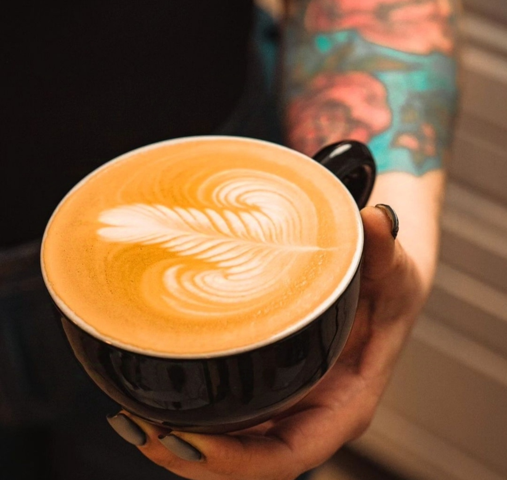

<!DOCTYPE html>
<html lang="en">

</html>

<head>
  <meta charset="UTF-8" />
  <meta name="viewport" content="width=device-width,initial-scale=1.0" />
  <title>Conoce sobre nootros</title>
  <!--meta tag :kw 5 a 15-->
  <meta name="ketwords" content="cafe , cursos de cafe , barismo , barista, cafe de especialidad, cursos para baristas desde cero">
  <!--meta description-->
  <meta name="description" content="Descubre nuestros cursos de café de especialidad para aprender desde la preparación perfecta hasta la cata avanzada. Ideal para quienes quieran formarse como baristas y amantes del café arabica. Aprende con expertos.">
  <!--meta author-->
  <meta name="author" content="Carolina Benitez">
  <!--bootstrap-->
  <link href="https://cdn.jsdelivr.net/npm/bootstrap@5.3.3/dist/css/bootstrap.min.css" rel="stylesheet"
    integrity="sha384-QWTKZyjpPEjISv5WaRU9OFeRpok6YctnYmDr5pNlyT2bRjXh0JMhjY6hW+ALEwIH" crossorigin="anonymous">
  <link rel="stylesheet" href="css/bootstrap.css">
  <!-- <link rel="stylesheet" href="styles.css"> -->
  <link rel="stylesheet" href="./css/style.css">

  <head>

  <body class="fondo">
    <script src="https://cdn.jsdelivr.net/npm/@popperjs/core@2.11.8/dist/umd/popper.min.js"
      integrity="sha384-I7E8VVD/ismYTF4hNIPjVp/Zjvgyol6VFvRkX/vR+Vc4jQkC+hVqc2pM8ODewa9r"
      crossorigin="anonymous"></script>
    <script src="https://cdn.jsdelivr.net/npm/bootstrap@5.3.3/dist/js/bootstrap.min.js"
      integrity="sha384-0pUGZvbkm6XF6gxjEnlmuGrJXVbNuzT9qBBavbLwCsOGabYfZo0T0to5eqruptLy"
      crossorigin="anonymous"></script>
    <header>
      <nav class="navbar navbar-expand-lg bg-body-tertiary">
        <div class="container-fluid">
          <a class="navbar-brand" href="./cursos.html">CURSOS</a>
          <button class="navbar-toggler" type="button" data-bs-toggle="collapse" data-bs-target="#navbarNav" aria-controls="navbarNav" aria-expanded="false" aria-label="Toggle navigation">
            <span class="navbar-toggler-icon"></span>
          </button>
          <div class="collapse navbar-collapse" id="navbarNav">
            <ul class="navbar-nav">
              <li class="nav-item">
                <a class="nav-link active" aria-current="page" href="./nosotros.html">NOSOTROS</a>
              </li>
              <li class="nav-item">
                <a class="nav-link" href="./index.html">INICIO</a>
              </li>
              <li class="nav-item">
                <a class="nav-link" href="./sesion.html">SESION</a>
              </li>
              <li class="nav-item">
                <a class="nav-link" href="./tutores.html">TUTORES</a>
              </li>
            </ul>
          </div>
        </div>
      </nav>
    </header>
    <div class="coffee">
      <p id="palabra"><strong>COFFEE ARÁBICA</strong></p>
    </div>
    <div>
      
    </div>
    <h1 class="tituloprincipal">¿QUIENES SOMOS?</h1>
  <p class="p-descripcion">
      En Coffee Arábica, somos apasionados por el café y todo lo que este puede significar.
      Desde compartir y ponerse al día, hasta desarrollar habilidades que puedan llevarse a grandes competencias a
      nivel nacional e internacional.
      Descubre con nosotros una nueva experiencia, adquiere herramientas para el manejo de una cafetería y del balance
      de un café para el público.
    </p>
    <p class="p-descripcion">
      En nuestra plataforma online ofrecemos una variedad de cursos introductorios al rubro de café de
      especialidad.
      Entender las diferencias básicas de un café comercial y uno de especialidad permitirán indeficar mejor las
      variables al memento de llevar los conocimientos a la practica.
    </p>
    
    <h2 class="titulosecundario"> ¿QUÉ ES EL LATTE ART?</h2>
    <p class="parrafonumero1">
      Son todas aquellas figuras que se pueden crear sobre una base de café, chocolate, matcha etc. En el mundo del
      café, existe 3 elementos básicos de dibujo: El corazón, el tulipán y la rosseta.
      Una vez dominados estos 3 patrones se pueden desarrollar muchas figuras sobre una base de espresso y sus
      deribados.
    </p>
   <p class="parrafonumero2">Además contamos con tutores con más de 10 años de experiencia en el café, fincas, charlas
      y catas.
      Estarás rodeado de profesionales en la materia y atenderán tus dudas en todo momento.
    </p>
    
  </body>
  <footer class="footer">
    <address class="ubicacion">Estamos ubicados en la Región Metropolitana, Santiago de Chile</address>
    
  </footer>
  </html>